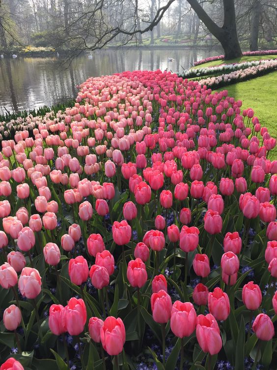

Learn more about Faerieland and explore the culture with these many fun facts!

Faerieland is a north western region in Tenarvia and is known for many things such as
pink tulips, their top class Crystal Beach Hotel , sweet bakeries, restaurants, and the famous Crystal Beach.
The national flower of Faerieland is the Tulip. Believed to bring peace and prosperity to the land, they are planted in various areas around Faerieland.
Sanctuaries and gardens have been built throughout the lands and are home to the most best and pinkest tulips.
In the far far past, around when Faerieland was not discovered yet, rumours have been spoken that real faries were roaming the lands
long before the dawn of humans. They were tiny little creatures with small wings and fluttered around the region. But when catastrophe struck and
a deadly volcano erupted, all the faries vanished. All that is rumoured to be left of them are ashes within the currently constructing Faerieland Museum.
Some believe that their ancestors were of fae descent! But most Faerielandians think this is a silly little legend.
The notorious Amethyst caves were formed by the devastating volcano eruption in the past.
There is no logical explanation for this rare occurence, but caves of real and pure violet amethyst were molded into the grounds and mountains.
Nowadays, only one of the several caves are open to the public in fear of skin oils contaminating the authentic crystals.


 Home
Places to go
About
Home
Places to go
About